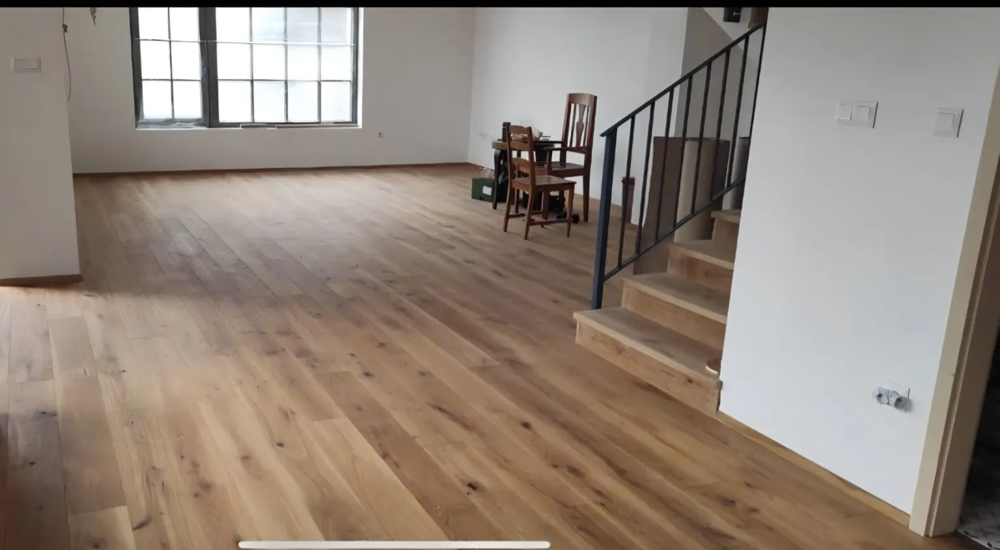
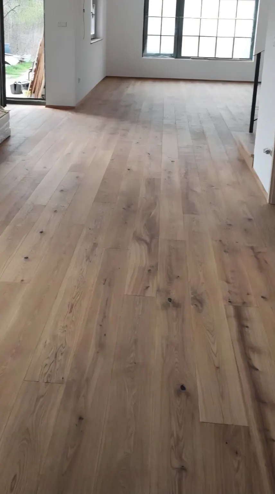
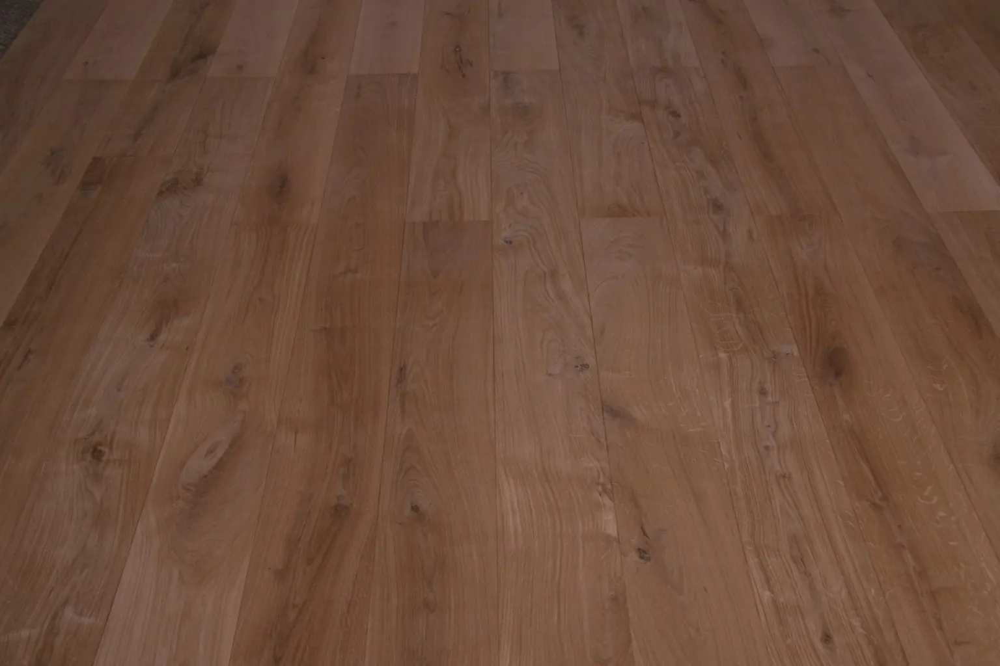
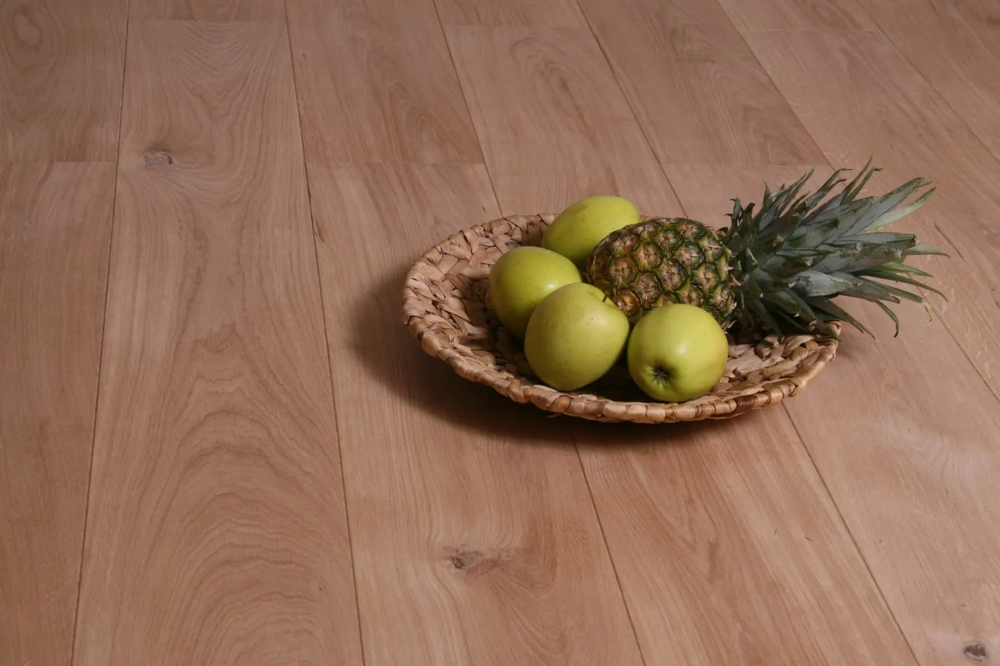
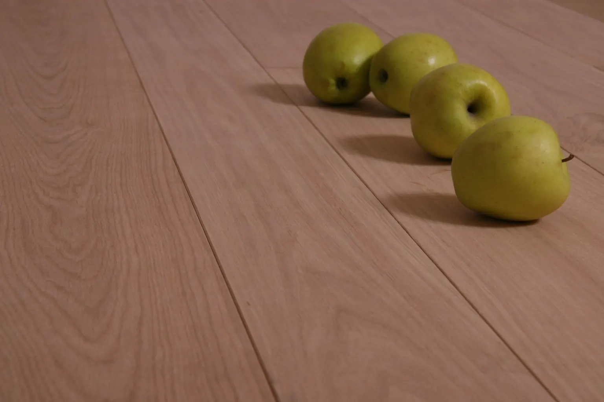

2 rétegű
Szélesség: 120–140 mm.
Hossz: 500–1200 mm.
Klasszikus valódi fa parketta 2 vagy 3 rétegű kivitelben. Többféle szélességben és hosszban, az adott térhez igazítva.
Nettó induló ár, felületkezelés nélkül.

Szélesség: 120–140 mm.
Hossz: 500–1200 mm.
Szélesség: 120–250 mm.
Hossz: 400–2400 mm, maximum 2800 mm.
A 2 és 3 rétegű parketta egyaránt alkalmas padlófűtéshez.
Alapként tölgy és kőris, de különleges, kereskedelmi forgalomban beszerezhető és műszakilag megfelelő fafajból is tudunk fedőlamellát gyártani.
Olajozás · Lakkozás · Strukturált kefélés · Kézi gyalulás
A pontos gyártási idő a választott kiviteltől, fafajtól, mérettől és mennyiségtől függ.
Kiválasztás → Egyeztetés → Ajánlat → Gyártás → Átvétel





120–140 mm szélességben és 500–1200 mm hosszban.
120–250 mm szélességben és 400–2400 mm hosszban, maximum 2800 mm-ig.
Igen. A 2 és 3 rétegű parketta egyaránt alkalmas padlófűtéshez.
Alapként tölgy és kőris, de különleges, kereskedelmi forgalomban beszerezhető és műszakilag megfelelő fafajból is tudunk fedőlamellát gyártani.
Jellemzően 30–60 nap, a választott kiviteltől és mennyiségtől függően.
A svédpadló induló ára 12 000 Ft + ÁFA/m², felületkezelés nélkül. A végleges ár a kivitel, méret, fafaj, felület és mennyiség alapján készül.
Nem kell minden részletet előre tudnia.
Írja meg a hozzávetőleges mennyiséget és az elképzelést, a műszaki részleteket egyeztetjük.
A Quadrum Parketta a Signum Parkett Kft. saját parkettamárkája és közvetlen gyártói értékesítési oldala. Három évtizede gyártunk rétegelt parkettát.
További információ a gyártóról